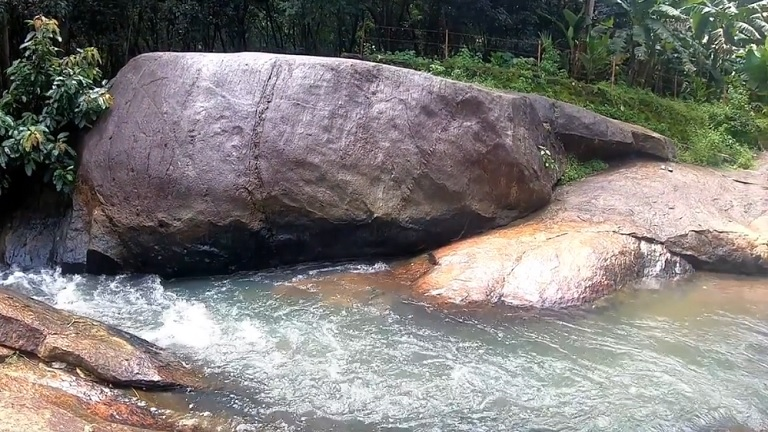

Home
(current)
Explore
Districts
Adventure
Holiday Packages
Cusines
Heritage
The Wild
Reviews
Destination
WaterFalls
Beaches
Museum
Contact Us
Sign In
Search
KOLLAM
Get back to nature with an adventure through Thenmala and Shendruney! Let the lazy Ashtamudi backwaters set the pace to your day and village folktales flow to your heart. Discover the dynamic festivals that leave imprints in your soul. Let the misty mountains awake you with whispered tales of long-forgotten travellers.Kollam isn't just a destination, it's a saga of experiences!
How to Reach:
Bus
Kollam is well connected by road via NH-47, NH-220 and NH-208. There are regular interstate buses that run in this route. All buses ply from major cities like Bangalore, Chennai, Madurai, Pondicherry, and many more.
Train
Kollam Junction is the main railway station in the city.
Flight
Trivandrum International Airport is just 66 Km away from Kollam, which is considered as the most nearest airport.
Places to Visit
Jatayu Earth's Center:
Jatayu Earth Centre is a treasure trove of activities. A multitude of adventurous activities welcome the visitors here. One will certainly find it confusing to choose from the long list of adventures.
Thenmala:
Thenmala Ecotourism is a perfect spot in which to spend your holidays as it offers a host of attractions that will leave you with a heart full of joy and bliss.
Palaruvi Waterfalls:
One of the most famous and most visited waterfalls in south Kerala is Palaruvi the “Stream of Milk” situated in Thenmala region.
Achankovil River:
The river Achankovil also flows through the Kollam district. A series of ancient temples are located in the banks of Achankovil such as the famed Achankovil Sastha Temple or the Dharmasastha Temple which is one among the five important temples dedicated to Lord Ayyappa in Kerala.
Things to do
Water Sports :
Come and bask in the sparkling waters of Ashtamudi Lake. Introducing Aqua Parasailing for the first time in Kerala and soak in the heavenly glory of its backwaters. Parasail and glide with the morning breeze.
Trekking and Camping:
fair share of attractive beaches, forts, wildlife sanctuaries, trekking trails and other places of importance.
Boat ride:
Enjoy being toppled over with the sudden turn. Feel the joy of floating and head back refreshed.
Gallery
